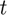
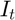
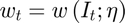
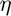
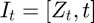
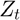
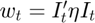

Quota lease price function
- Filename: qplease.m
- Authors: Matt Reimer
- Created: 07/08/17
- Purpose: Function that returns the expected lease price for a given set of state variables.
Contents
Description
The function qplease returns the expected end-of-season quota lease price given a common set of exogenous state variables.
In any period , fishers are assumed to form a common forecast of the end-of-season quota prices, and based on that forecast, the fishery that is optimal is chosen. We assume that forecasts are based on fleet-wide information that is observed at the beginning of the period prior to making a fishery decision. In this sense, fishers observe the aggregate state of the world and update their expectations over future quota prices. Let  represent a vector of aggregate state variables. Then the period forecast of end-of-season quota lease prices  can be represented by the following vector-valued parametric function:
can be represented by the following vector-valued parametric function:

where  is a matrix of parameters whose values are determined in equilibrium.
To start, we assume that:
- , where  denotes fleet-wide cumulative catch up to period ;
- The forecast function is quadratic: .
function w = qplease(t,Z,eta)
Input arguments:
- t = time period;
- Z = cumulative fleet-wide catch;
- eta = matrix of parameters;
Output arguments:
- out1 = expected quota lease price;